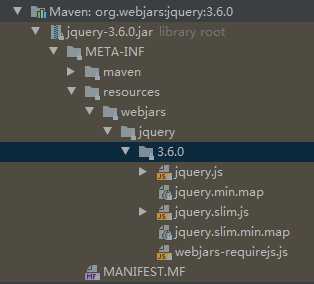

要解决的问题：
- 导入静态资源
- 首页
- jsp、模板引擎thymeleaf
- 装配扩展SpringMVC
- 增删改查
- 拦截器
- 国际化
静态资源位置
找到自动配置类 WebMvcAutoConfiguration
webjars：可以使用maven的方式引入前端依赖
官网：https://www.webjars.org/
资源下载的路径

1
2
3
4
5
6
7
8
9
10
11
12
13
14
15
16
17
18
19
20
| public void addResourceHandlers(ResourceHandlerRegistry registry) {
if (!this.resourceProperties.isAddMappings()) {
logger.debug("Default resource handling disabled");
} else {
this.addResourceHandler(registry, "/webjars/**", "classpath:/META-INF/resources/webjars/");
this.addResourceHandler(registry, this.mvcProperties.getStaticPathPattern(), (registration) -> {
registration.addResourceLocations(this.resourceProperties.getStaticLocations());
if (this.servletContext != null) {
ServletContextResource resource = new ServletContextResource(this.servletContext, "/");
registration.addResourceLocations(new Resource[]{resource});
}
});
}
}
|
结论：
能不配置资源路径就不配置资源路径
首页定制
自定义图标
https://www.cnblogs.com/nosouln/p/12624192.html